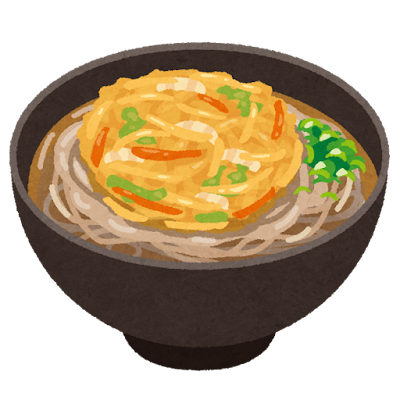

Tempura: The Delicate Art of Japanese Frying

Portuguese Roots, Japanese Soul
The word tempura likely derives from the Portuguese tempero (seasoning) or the Latin tempora, referring to the Lenten period when Catholics ate fried vegetables instead of meat. Portuguese missionaries and traders arrived in Japan in the 16th century, bringing with them the technique of coating and frying food in batter.
Japanese chefs took this foreign technique and transformed it entirely. Where European frying was heavy and robust, Japanese tempura became ethereally light — a whisper of crisp batter that shatters at the first bite to reveal perfectly cooked ingredients within.
The Craft
Great tempura requires ice-cold batter (sometimes mixed with ice water), extremely hot oil (around 180°C), and ingredients at peak freshness. The batter is intentionally undermixed — lumps are desirable, as over-mixing develops gluten and creates heaviness. A master tempura chef can tell the oil temperature by the sound of the fry and the behavior of batter droplets.
The result is a coating so delicate it is nearly transparent, with a satisfying crunch that gives way to the natural sweetness of shrimp, the earthiness of sweet potato, or the bright vegetal snap of shiso leaf.
Classic Tempura Dishes
Tendon (天丼)
A bowl of rice topped with assorted tempura, drizzled with a sweet-savory tentsuyu sauce. It is one of Tokyo s quintessential lunch dishes — satisfying, affordable, and deeply comforting.

Kakiage Soba (かき揚げそば)
A fritter of mixed vegetables and small shrimp served atop buckwheat noodles in hot broth — a staple of standing soba shops across Japan.

Tempura teaches that restraint is not absence — it is the discipline of knowing exactly how much is enough.